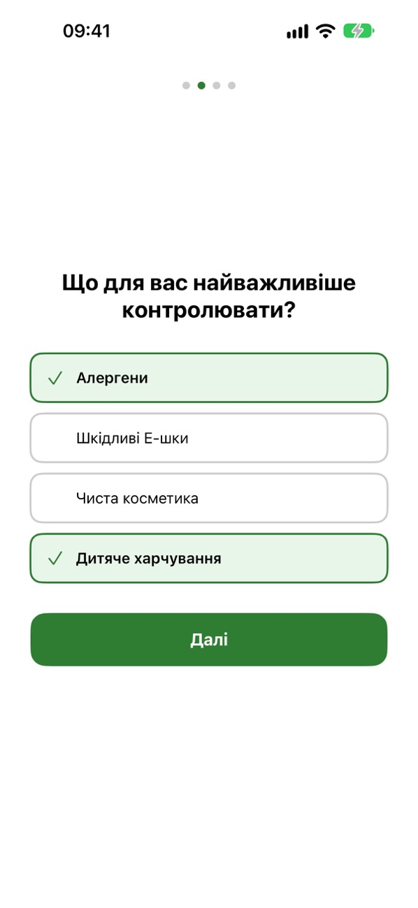

EcoScanner: ШІ сканер складу
ШІ-сканер складу їжі та косметики
Наведіть камеру на список інгредієнтів на упаковці. EcoScanner прочитає текст, а ШІ простими словами пояснить, що всередині і наскільки це безпечно.
Знімки екрана



Що ви отримуєте
- Оцінка небезпеки від 1 до 10 із зрозумілим кольором: зелений, жовтий або червоний
- Виділені шкідливі Е-добавки, алергени та сумнівні інгредієнти
- Персональна перевірка за вашими цілями: алергени, Е-добавки, чиста косметика, дитяче харчування
- Розпізнає етикетки багатьма мовами й відповідає вашою мовою
- Їжа, косметика й побутова хімія
9 мов: українська, англійська, іспанська, французька, німецька, португальська, китайська, гінді, арабська
Безкоштовно
3 сканування на день і ще 2 за перегляд короткої реклами.
Premium
До 20 ШІ-сканувань на день, порівняння до 3 продуктів, щоб обрати найбезпечніший, без реклами, 7 днів безкоштовно.
EcoScanner надає загальну інформацію, згенеровану ШІ, і не є медичною порадою. Якщо у вас алергія чи проблеми зі здоров'ям, завжди перевіряйте оригінальну етикетку та консультуйтеся з фахівцем.